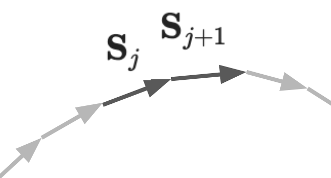
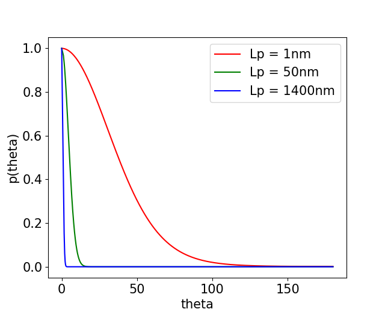
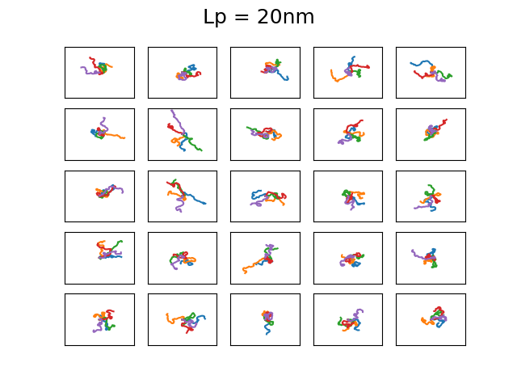
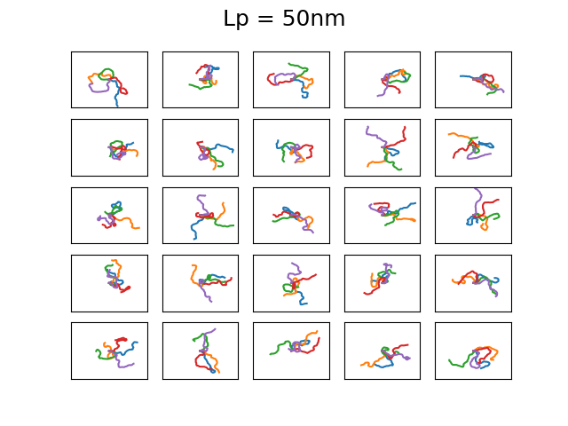
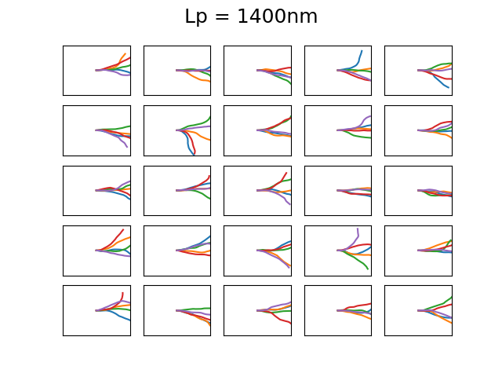
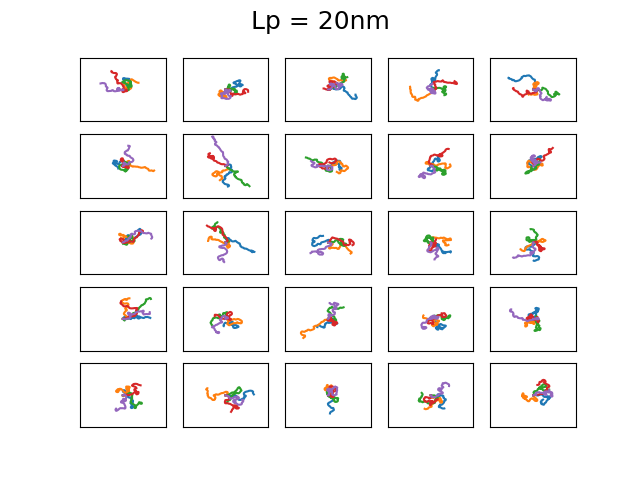
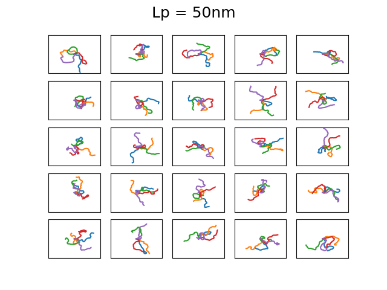
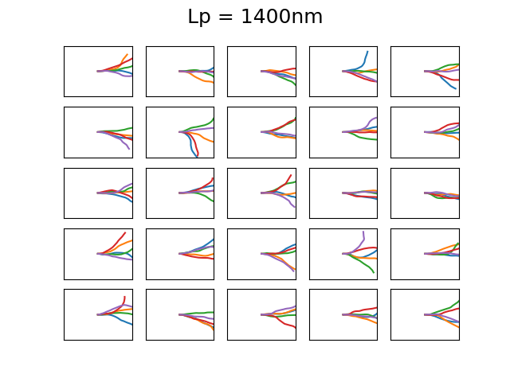

A simple model for configurations of DNA pt. I
Electrophoretically driven transport of long biopolymers, like DNA, through small constrictions has become a standard characterisation tool in studing them, be it in bulk via gel eletrophoresis or on the single-molecule level via nanopore sensing. Electrical potential differences over nanoscale constrictions generate huge electric fields that these molecules love to be guided by. But these field also nanopummel these molecules into configuration do not naturally like to be in: they display strong bending, much beyond the length scale over which they typically will display deformations. This is particularly profound in nanopore sensing where molecules adopt interesting configurations that can potentially be exploited to further study them. But is there a way to figure out what typical configurations DNA molecules take and can we model what configuration they will adopt when driven into nanoconstrictions using electric fields?
Fortunately, long polymers are 1D systems and those are generally easy to model as they can typically be solved analytically. Physicists have a range of toy models available that can be directly applied to the question of bending DNA polymers in nanoconstrictions. By making some basic assumptions we can beautifully recover some behaviour of these molecules and get quite a long way in understanding their nanoscale desires. I will here share my unpolished follow-your-nose approach into modelling DNA in native condition and when driven into confinement. I have divided this analysis in four parts: the model description of a native polymer, the bending of a polymer in a simple nanopore, the bending of a polymer in a more realistic nanopore, and the implication this has for polymer sensing. Here, part I the model for a polymer is described which will form the backbone of the analysis and will run as a thread through the others sections. All code used to generate the plots below can be found on my github here
We will take here DNA as our biopolymer of interest. Its a convenient place to start as DNA transport through nanopores has been studied untill the cows came home. To model DNA we assume it's made up of small segments of size \( b \) all chained together. This is actually sort of true when it comes to double stranded DNA; it is made up of chemical units connected through a phosphate bond, about 0.3nm apart. It's a bit of an oversimplification, but these numbers indicate the typical lengthscales we should use for each segment. For a DNA molecule of contour length \( L \), its length when fully stretched, we have \(N = {L \over b}\) segments.

These segments themselves will want to align with their neighbors; this reflects the resistance to bending of the chain, which is a sensible propensity considering the stiffness of the molecular structure of DNA. For a particular segment \( j \) in the polymer we simplify this interaction by only considering its direct neighbors on the chain \( j-1 \) and \( j+1 \). The desire of alignment of segments \( j \) and \( j+1 \) means their orientation directions in space, \( {\bf S}_j \) and \( {\bf S}_{j+1} \), will want to be the same, paying no penalty when aligned and a maximum penalty when anti-aligned. The energy penalty for the total chain can then be described as a sum of every individual term, which is indentical to a simplified 1D Ising model:
\[H_{bend} = {J_D \over k_BT} \sum_{j=1}^{N-1} [1-{\bf S}_j\cdot{\bf S}_{j+1}].\]
Here \( J_D = {L_p \over k_BT} \) is the characteristic bending energy term, with \( L_p \) the persistence length in segment units and \( k_BT \) the Boltzmann temperature factor. The persistence length and Boltzmann temperature factors are the characteristic bending scale and the characteristic energy scale the polymer chain finds itself in: the persistence length controls the typical length scale over which bending occurs and is a constant that is determined by the molecular structure the segment connections, the Boltzmann temperature factor describes the energy scale of thermal fluctuations in the physical system. The neighbor interaction term \( 1-{\bf S}_j\cdot{\bf S}_{j+1}\) then controls the dynamics of the system. Note also that the sum runs over all segments, meaning that only one of the neighbors needs to be considered to avoid double counting.
The energy penalty for bending is the central part of the modelling. From here on you can follow straightforward thermodynamics physics to get typical and realistic configurations out. But it's been a long time since I have worked this out, probably somewhere in my undergraduate, and it's actually quite fun to do! So I will rerun this analysis here.

Ok, so we want to find a realistic configuration for our DNA chain, given certain parameters: \( b \), \( N \), \( L_p \), \( k_BT \). For simplicity, we assume or DNA polymer lives in 2D. We need to generate all \( {\bf S}_j \), which we can do because we have \( H_{bend}\). Thermal excitations will push the segment out of perfect alignment. The probability that two segments \( j \) and \( j+1 \) well pay an energy penalty \( E_i \) between each other is given by the Boltzmann distribution:
\[p(E) = {\exp(-{E \over k_BT}) \over \int \exp(-{E \over k_BT}){\rm d}E} ,\]
Where the integral runs over all possible energy penalties. In our case, \(E_j\) can run from \(0 \) (fully aligned) to \( 2{J_D \over k_BT}\) (fully anti-aligned). Evaluating the integral, where \(E\) runs from \(0\) to \(2 \), this probability becomes:
\[p(E_j) = {\exp(-{E_j \over k_BT}) \over k_BT(1-\exp(-2{J_D \over k_BT})} .\]
In order to draw a \(\cos(\theta_j) = {\bf S}_j\cdot{\bf S}_{j+1}\) from this distribution, we can draw a sample \( Z_j \) from a uniform distribution and transform it through the inverse of the cumulative distribution of \( p(E_j)\):
$$
\begin{cases}
Z_j \sim (0,1) \\
E_j = -\log(1-Z_j(1-\exp(-2{J_D \over k_BT})))
\end{cases}. $$
We get a sample of \(\cos(\theta_j)\) by inverting the energy penalty for segment misalignment \(\cos(\theta_j) = 1-{k_BT \over J_D}E_j\). This allows us to create a set of realistic misalignment cosines between different vector segments for a given chain. For each of these segments, assuming their tail start at \((0,0)\) we can write down their x and y coordinates of their heads as:
$$
\begin{align}
x_j &= b\cos(\theta_j),\\
y_j &= \pm b\sqrt{1-\cos^2(\theta_j),}
\end{align}
$$
which are now written in the coordinate system where the previous segment aligns with the x-axis and \(\pm\) is taken means the sign is drawn from \( \{+,-\} \) with equal probability.
Effectively we know the mismatch in alignment of each segment \( {\bf S}_j \) with its next neighbox \( {\bf S}_{j+1} \) and in order to visualise the chain we will need to put our first segment on our global coordinate system (or lab frame if you like) and iteratively add every next segment onto our growing chain. We start off with the first segment \( {\bf S}_0 \) along some axis, let's say one \( \alpha = 30^\circ \) from the x-axis: its head coordinates are \( (x'_0, y'_0) = (b\cos(\alpha), b\sin(\alpha))\). We are free to choose this first guy, as there is no segment yet to align to. The next segment \( {\bf S}_1 \) has an coordinates \((x_1, y_1)\) in the frame of \( {\bf S}_0 \), as determined before. In order to make sure that we add this next element in the correct direction, we need to rotate \((x_1, y_1)\) along \( (x'_0, y'_0)\) so that it aligns with \({\bf S}_0\) in our global coordinate system. This is done with a matrix operation on \((x_1, y_1)\):
$$\begin{gather}
(x'_1, y'_1)
=
\begin{pmatrix}
{x'_0 \over b} & {y'_0 \over b} \\
-{y'_0 \over b} & {x'_0 \over b}
\end{pmatrix}
\begin{pmatrix}
x_1 \\ y_1
\end{pmatrix}
\end{gather}
$$
Note that this is rotation matrix for rotating a vector \( \alpha = 30^{\circ}\) with respect to the x-axis. The segment is now described in our global coordinate system, and its direction is \(({x'_1 \over b}, {y'_1 \over b})\). This can be used to rotate the next segment \( {\bf S}_2 \) to align it with \( {\bf S}_1 \) in our glabal coordinate system, replacing \( x'_0 \to x'_1 \) and \( y'_0 \to y'_1 \) in the matrix. Now we have a description of our chain in our global coordinate system and all that lasts is that we join the heads and tails of each neighboring segment. This we can do by performing a cumulative sum on all \( x_j \) and \( y_j \) seperately. That's it, now we are done!
 


The 4 set of images above show different examples of DNA molecules with \(N = 1000\), \(b = 0.3\)nm, \( k_BT = 25\)meV, and \(L_p = 1,20,50,1400 \) and the bounding box has a size of 500x500nm. These persistence lengths are typical for single stranded DNA, nothing I know of, double stranded DNA, and a 6 helix origami DNA bundle, respectively. Every first element starts along the x-axis. You can see that with increasing persistence length, the DNA chain becomes much less condensed, as is expected as it cannot bend over small distances. The figures are a bit difficult to discern, but each of the 25 subfigures shows 5 DNA coils plotted together and it is clear that for large persistence lengths \( L_p = 1400, 50 \) the DNA bends rather smoothly. Even though this plotting is not particularly useful, it is a neat demonstration that with very simple assumptions and some basic physics one can generate realistic DNA coils! We will use the simplified Ising model in the next post to calculate typical bending configurations of DNA in a nanoconfinement (nanopore).



The 4 set of images above show different examples of DNA molecules with \(N = 1000\), \(b = 0.3\)nm, \( k_BT = 25\)meV, and \(L_p = 1,20,50,1400 \) and the bounding box has a size of 500x500nm. These persistence lengths are typical for single stranded DNA, nothing I know of, double stranded DNA, and a 6 helix origami DNA bundle, respectively. Every first element starts along the x-axis. You can see that with increasing persistence length, the DNA chain becomes much less condensed, as is expected as it cannot bend over small distances. The figures are a bit difficult to discern, but each of the 25 subfigures shows 5 DNA coils plotted together and it is clear that for large persistence lengths \( L_p = 1400, 50 \) the DNA bends rather smoothly. Even though this plotting is not particularly useful, it is a neat demonstration that with very simple assumptions and some basic physics one can generate realistic DNA coils! We will use the simplified Ising model in the next post to calculate typical bending configurations of DNA in a nanoconfinement (nanopore).
© D.V., 2019. This website is hosted on Github and made using skeleton: getskeleton.com